机器人学习资料 · 中文阅读版 · 2026-11-26
π0：面向通用机器人控制的
视觉—语言—动作流模型
作者单位：Physical Intelligence
根据用户提供的 17 页原论文制作。中文内容沿用中英对照版，改为连续单栏阅读，包含摘要、正文、图注、致谢和附录。
这是一份非官方学习译文。正文采用中文；模型名称、作者姓名、数学符号以及原图中的英文标签保留。图表使用论文原图，图注已翻译。参考文献条目不在本版重排，正文引用编号保持原样，可在随附的英文原稿中查询。译者补充说明均明确标记。
阅读时可以先了解：模型输入是什么、动作如何生成、训练数据从哪里来，以及模型怎样执行动作。
英文原稿：pi0-original.pdf
本 PDF 不附英文对照正文。
原论文第 1 页 · 标题、摘要与图 1
作者单位：Physical Intelligence。作者：Kevin Black, Noah Brown, Danny Driess, Adnan Esmail, Michael Equi, Chelsea Finn, Niccolo Fusai, Lachy Groom, Karol Hausman, Brian Ichter, Szymon Jakubczak, Tim Jones, Liyiming Ke, Sergey Levine, Adrian Li-Bell, Mohith Mothukuri, Suraj Nair, Karl Pertsch, Lucy Xiaoyang Shi, James Tanner, Quan Vuong, Anna Walling, Haohuan Wang, Ury Zhilinsky。
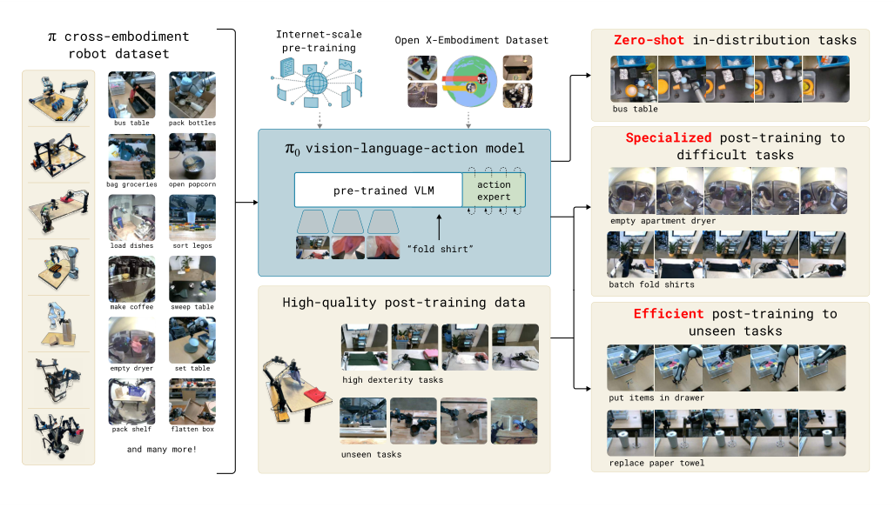
摘要——机器人学习具有巨大潜力，能够充分发挥灵活、通用、灵巧的机器人系统的能力，也有望帮助回答人工智能中一些最深层的问题。然而，要让机器人学习达到有效真实世界系统所需的通用程度，仍面临数据、泛化和鲁棒性方面的重大障碍。本文讨论通用机器人策略（即机器人基础模型）如何应对这些挑战，以及如何为复杂且高度灵巧的任务设计有效的通用策略。我们提出了一种建立在预训练视觉语言模型之上的新型流匹配架构，以继承互联网规模的语义知识。随后，我们讨论如何使用来自多种灵巧机器人平台的大规模多样化数据集训练该模型；这些平台包括单臂机器人、双臂机器人和移动操作机器人。我们评估模型通过直接提示执行任务、遵循人类及高层 VLM 策略提供的语言指令，以及通过微调掌握新技能的能力。实验覆盖折叠衣物、清理桌面、组装纸盒等多种任务。
Physical Intelligence，美国加利福尼亚州旧金山。通讯邮箱：research@physicalintelligence.company。
原论文第 2 页 · 引言
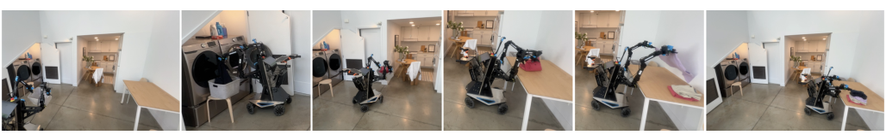
I. 引言
一个人应该能够换尿布、策划进攻、宰猪、驾驶船只、设计建筑、写十四行诗、核对账目、砌墙、接骨、安慰临终者、接受命令、下达命令、与人合作、独立行动、解方程、分析新问题、铲粪、编写程序、做一顿美餐、高效战斗、英勇赴死。专业化是昆虫的事。——罗伯特·A. 海因莱因，《时间足够你爱》。
人工智能系统形态各异：有的高度专门化，能解决人类思维难以处理的复杂问题，例如预测蛋白质构象 [21]；有的则能依据文本提示生成逼真的高分辨率图像或视频 [40]。然而，人类智能最显著领先于机器智能的维度是多面性：能在不同物理环境中完成各种任务，同时对环境约束、语言命令和意外扰动做出合理响应。人工智能在这种多面性上最切实的进展，或许体现在大型语言模型和视觉语言模型 [1,48] 上：这些系统先在来自互联网的大规模、多样化图文语料上预训练，再使用更精心筛选的数据集微调（“对齐”），以诱导期望的行为和响应方式。尽管它们已表现出广泛的指令遵循和问题求解能力 [53,27]，却并不像人一样真正处在物理世界中；它们对物理交互的理解完全基于抽象描述。若想用这些方法取得实质进展，构建具有人类那种立足物理世界的多面性的 AI，就需要使用真实物理交互数据训练它们，也就是来自具身机器人智能体的数据。
能够被指派执行多种机器人行为的灵活通用模型，具有重大的实际意义，也可能帮助解决机器人学习当前最困难的一些问题，包括数据可得性、泛化和鲁棒性。在自然语言 [1] 和计算机视觉 [39] 中，在多样化多任务数据上预训练的通用基础模型，往往优于为狭窄用途定制的专门化……【下文续接】
【承接前文】解决方案。例如，若目标是识别照片里的鸟，通常先在大量不同的图文关联上预训练，再针对鸟类识别进行微调或提示，比只在鸟类识别数据上训练更合适。同理，为了获得有效的专用机器人系统，先在高度多样化的机器人数据上预训练，再针对目标任务微调或提示，可能更有效。通用模型能利用更多来源，包括其他任务、其他机器人乃至非机器人数据，因此可以缓解数据稀缺；多样化数据覆盖更广的观察和动作，提供狭窄专用数据中未必出现的场景、纠正和恢复行为，也可能改善鲁棒性与泛化。因此，将大规模预训练引入机器人学习，有望应对该领域的许多挑战，使实用的学习型机器人变成现实，同时加深我们对人工智能深层问题的理解。
不过，开发这样的通用机器人策略，即机器人基础模型，仍有若干重大挑战。第一，研究必须达到很大规模，因为在较小规模上通常无法充分体现大规模预训练的收益 [54]。第二，需要合适的模型架构，既有效利用多样数据，又能表示与复杂物理场景交互所必需的精细微妙行为。第三，需要正确的训练方案。这可能是最重要的组成部分，因为 NLP 与计算机视觉中大型模型的近期进展，很大程度依赖于精细组织预训练和后训练数据的策略 [35]。
本文提出一个名为 π0 的原型模型及学习框架，说明如何应对这三个瓶颈。图 1 展示了模型和系统。为了纳入多样化数据来源，我们先使用预训练视觉语言模型（VLM），引入互联网规模的经验。以 VLM 为基础，使模型能够继承语言模型和视觉语言模型的一般知识、语义推理与问题求解能力。接着，我们进一步训练模型，使其能够处理机器人动作，将其变成视觉—语言—……【下文续接】
原论文第 3 页 · 引言与相关工作
【承接前文】动作（VLA）模型 [7]。为了利用多样化的机器人数据，我们采用跨本体训练 [10]，将多种机器人类型的数据合并到同一个模型中。这些机器人包括单臂、双臂和移动操作系统，具有不同的构型空间和动作表示。为了完成高度灵巧而复杂的物理任务，我们采用动作分块架构 [57]，结合流匹配（一种与扩散相关的变体）来表示复杂的连续动作分布 [28,32]。这让模型能够以最高 50 Hz 的频率控制机器人，执行叠衣等灵巧任务（见图 1）。为将流匹配与 VLM 结合，我们使用一种新的动作专家，为标准 VLM 增加基于流的输出。
与语言模型一样，模型架构只是我们方法的一部分。要灵活且稳健地完成复杂任务，还需要合适的训练方案。我们的方案借鉴超大规模语言模型与图文模型中常见的预训练／后训练分离方式 [1,48]：先在大规模、多样化语料上预训练，再在范围较窄、筛选更精细的数据上微调，以诱导期望行为；在这里就是灵巧性、效率和鲁棒性。直观地说，只在高质量数据上训练，模型学不到如何从错误中恢复，因为这类数据很少包含错误；只在较低质量的预训练数据上训练，又不能教会模型高效而稳健地行动。两者结合后，模型会尽可能表现得像高质量示范，同时仍保有一套可在出错时使用的恢复与纠正行为。
本工作的贡献包括：基于 VLM 预训练和流匹配的新型通用机器人策略架构，以及对机器人基础模型预训练／后训练方案的实证研究。我们评估模型直接接受语言命令的开箱即用能力、针对下游任务微调的能力，以及与高层语义策略结合完成复杂长时任务的能力；高层策略会输出中间语言指令。虽然模型和系统吸收了近期工作的多种思想，但其组合方式是新的；实证评估展示的灵巧性与通用性显著超越了此前展示的机器人基础模型。我们使用超过 10,000 小时的机器人数据预训练，并针对多种灵巧任务微调，包括叠衣（图 2）、清桌、把餐具放进微波炉、把鸡蛋装进蛋盒、组装纸盒和杂货装袋。
II. 相关工作
我们的工作建立在近期大规模机器人学习和多模态语言模型方法之上，最接近的是将预训练 VLM 微调用于机器人控制的 VLA 模型 [7,24,55]。这些模型采用自回归离散化，像表示文本 token 一样表示动作。与之相比，我们采用新的设计，通过流匹配 [32,28]（一种与扩散 [20,46] 相关的变体）微调 VLM，使其产生动作。这使我们能够处理高频动作块 [57]（最高 50 Hz）和高度灵巧的任务；我们表明，这对此前的自回归 VLA [7] 是重大挑战。这与近期利用扩散生成动作的一些工作 [9,60] 相似，但我们的模型使用预训练 VLM 骨干 [5]。我们的贡献也具有整合性质：关注机器人基础模型的整体框架，不仅包括架构，还包括训练方案、预训练与后训练阶段，以及一系列真实机器人实验。
在机器人控制之外，已有许多模型将预训练语言模型与扩散结合 [40,41,14]，也有专门混合扩散和自回归大语言模型的工作 [19,29,59]。这些模型通常用于图像生成，但我们的动作生成模型借鉴了其中一些概念。与 Zhou 等 [59] 一样，我们使用施加于各序列元素的扩散式（流匹配）损失训练模型，而不是仅解码器 Transformer 的标准交叉熵损失。与 Liu 等 [29] 一样，我们对对应扩散的 token 使用独立权重。将这些概念纳入 VLA 后，据我们所知，我们首次提出了能够为灵巧控制生成高频动作块的流匹配 VLA。
我们的工作也建立在大规模机器人学习的丰富研究历史之上。早期研究常采用自监督或自主数据采集 [26,22,8]，为抓取 [18,37]、推动 [56] 等简单任务提供可行数据来源，但未涉及更灵巧行为的复杂性。近期，若干高质量控制数据集支持了更广泛的泛化 [23,10,52,33,34,43,13,6]，但通常仍是物体搬移和基础家具操作（如开抽屉）等较简单任务 [31,15]。更灵巧的任务多在较小规模上研究，通常为数十或数百条训练轨迹 [57]，相当于不超过 10 小时。由于我们的目标之一是研究复杂灵巧行为，因此采用约 10,000 小时示范的大得多的数据集，并以开源 OXE 数据 [10] 补充。据我们所知，以机器人数据量衡量，这是迄今最大规模的机器人学习实验。在这个规模上，我们表明更精细的预训练／后训练方案非常有效：类似大语言模型，预训练赋予广泛知识基础，后训练再用高质量筛选数据加以完善，获得期望行为。
我们展示的任务复杂程度显著超出此前工作。虽然近期研究已展示若干更复杂、灵巧的……【下文续接】
原论文第 4 页 · 总览与模型
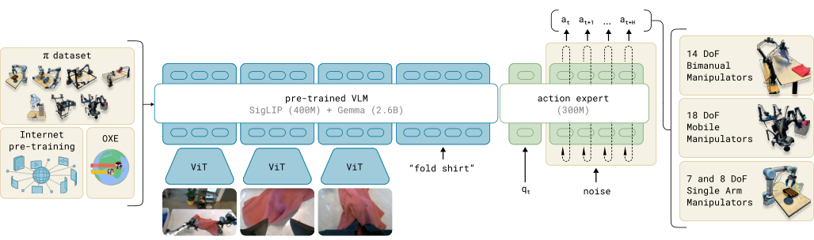
【承接前文】行为，例如系鞋带 [58] 或烹饪虾 [17]，而我们展示的框架能够学会持续很久、有时长达数十分钟的任务，同时涉及物理灵巧性和组合复杂性。例如叠衣任务要求操作从任意状态开始的不同衣物，并连续折叠多件；清桌任务需要判断新物体属于垃圾还是餐具。我们表明，同一个跨本体模型可以作为这些任务的基础模型。据我们所知，本工作展示了端到端机器人学习文献中持续时间最长的灵巧操作任务。
III. 总览
图 3 概述模型与训练流程。首先构建预训练混合数据：加权组合来自 7 种机器人配置、68 项任务的自有灵巧操作数据（第 V-C 节），以及包含 22 种机器人数据的 OXE 数据集 [10]。预训练阶段（第 V-A 节）也采用多样语言标签，将任务名称与片段标注结合；后者是针对子轨迹的细粒度标签，通常每段约 2 秒。预训练旨在获得能力广泛、具有泛化性的基础模型，而不是专门优化某一任务的高性能。这个基础模型能够遵循语言命令，以初步熟练程度执行多种任务。对于复杂灵巧任务，再采用后训练流程（第 V-A 节），用高质量筛选数据适配具体下游任务。我们既研究少量到中等数据量下的高效后训练，也研究用更大数据集完成叠衣、移动操作等复杂任务的高质量后训练。
第 IV 节描述的模型基于 PaliGemma 视觉语言模型 [5]，随后在我们的混合数据上进一步训练。为了将基础 PaliGemma VLM 转变为 π0，我们增加动作输出，借助流匹配 [32,28] 生成连续动作分布。下一节详细介绍这一设计。选择 PaliGemma 是出于便利及其相对较小的规模（有利于实时控制），但框架兼容任意基础预训练 VLM。
IV. π0 模型
图 3 所示的 π0 主要由语言模型 Transformer 骨干构成。沿用标准的后期融合 VLM 方案 [3,11,30]，图像编码器将机器人图像观察嵌入到与语言 token 相同的表示空间。我们进一步加入机器人专用输入和输出，即本体感知状态与机器人动作。π0 使用条件流匹配 [28,32] 对连续动作分布建模，提供高精度和多模态分布建模能力，尤其适合高频灵巧任务。架构受 Transfusion [59] 启发：在一个 Transformer 上使用多个目标，对应连续输出的 token 用流匹配损失监督，对应离散输出的 token 用交叉熵损失监督。在此基础上，我们发现对机器人专用的动作与状态 token 使用另一套权重能够改善表现。这种设计类似含两个专家的混合专家模型 [45,25,12,16]：第一套用于图像和文本输入，而……【下文续接】
脚注 1：本文中的“token”指序列维度上的输入／输出位置，不论该位置对应离散变量（例如语言 token），还是连续变量（例如图像块或机器人动作）。
原论文第 5 页 · 流匹配公式、模型与训练数据
【承接前文】第二套用于机器人专用输入与输出。我们将第二套权重称为动作专家。
形式上，我们要对数据分布 p(Aₜ | oₜ) 建模。Aₜ = [aₜ, aₜ₊₁, …, aₜ₊H₋₁] 表示未来动作组成的动作块；在本文任务中 H = 50。oₜ 是观察，由多张 RGB 图像、一条语言命令和机器人的本体感知状态组成，即 oₜ = [Iₜ¹, …, Iₜⁿ, ℓₜ, qₜ]。Iₜⁱ 是第 i 张图像，每个机器人使用 2 或 3 张图像；ℓₜ 是语言 token 序列；qₜ 是关节角向量。图像和状态分别经对应编码器编码，再通过线性投影映射到与语言 token 相同的嵌入空间。
动作块 Aₜ 中的每个动作 aₜ′ 都对应一个动作 token，并通过动作专家处理。训练时，使用条件流匹配损失 [28,32] 监督这些 token：损失是模型预测向量场 vθ 与目标向量场 u 之间的平方差期望。损失公式如下，θ 表示模型参数。
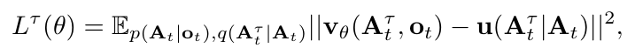
下标表示机器人时间步，上标表示流匹配时间步，τ ∈ [0,1]。近期高分辨率图像 [14] 与视频生成 [38] 的研究表明，流匹配结合简单的线性高斯（或最优传输）概率路径 [28] 可取得较好实证表现；论文给出的路径公式为 q(Aₜ^τ | Aₜ) = N(τAₜ, (1−τ)I)。实际训练时，采样随机噪声 ε ∼ N(0,I)，计算带噪动作 Aₜ^τ = τAₜ + (1−τ)ε，再训练网络输出 vθ(Aₜ^τ,oₜ) 匹配去噪向量场 u = Aₜ−ε。动作专家采用完全双向注意力掩码，因此所有动作 token 都可相互关注。训练时从强调较小 τ（更高噪声）区域的 Beta 分布采样 τ。更多细节见附录 B。
译者注：这里按论文保留高斯概率路径的写法；论文随后给出的带噪动作构造为 Aₜ^τ = τAₜ + (1−τ)ε。若将 N 的第二个参数按协方差理解，两种写法存在差异，复现时需结合实现核对。
推理时，从随机噪声 Aₜ⁰ ∼ N(0,I) 出发，将学到的向量场从 τ=0 积分至 τ=1，生成动作。使用前向欧拉积分：Aₜ^(τ+δ) = Aₜ^τ + δ·vθ(Aₜ^τ,oₜ)，其中 δ 为积分步长。实验采用 10 个积分步骤，即 δ=0.1。推理可以通过缓存前缀 oₜ 的注意力键和值来高效实现，每个积分步骤只重新计算对应动作 token 的后缀。附录 D 给出推理过程及模型各部分耗时的更多细节。
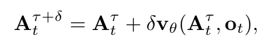
原则上，模型可从随机初始化开始训练，也可由任意 VLM 骨干微调而来；实际采用 PaliGemma [5]。它是拥有 30 亿参数的开源 VLM，在规模与性能之间提供了便利的折中。我们为从随机初始化开始训练的动作专家增加 3 亿参数，使模型总参数量达到 33 亿。完整架构见附录 B。
非 VLM 基线模型。除主要 VLA 外，我们还训练了一个不使用 VLM 初始化的相似基线，用于消融实验。该模型称为 π0-small，包含 4.7 亿参数，不采用 VLM 初始化，并有一些适合在本数据上从头训练的小改动，详见附录 C。通过该模型的比较，评估引入 VLM 预训练的收益。
V. 数据采集与训练方案
能力广泛的机器人基础模型不仅需要表达力强的架构，还需要合适的数据集，更重要的是合适的训练方案。类似大语言模型通常划分为预训练与后训练，我们采用多阶段训练。预训练让模型接触多样任务，学习广泛适用的一般物理能力；后训练则使其熟练流畅地执行所需的下游任务。因此两个阶段的数据要求不同：预训练应尽可能覆盖更多任务，并在每项任务中覆盖多样行为；后训练应覆盖有利于有效完成任务、策略一致且流畅的行为。直观上，多样但质量相对较低的预训练数据帮助模型从错误中恢复，并处理高质量后训练数据中未必出现的复杂变化；后训练数据则教模型把任务做好。
A. 预训练与后训练
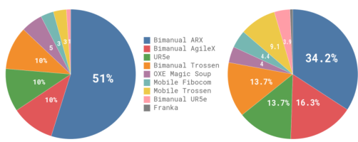
图 4 概述预训练混合数据。由于每个训练样本对应一个时间步，即二元组 (oₜ,Aₜ)，这里用时间步数衡量数据量。混合数据中 9.1% 来自开源数据，包括 OXE [10]、Bridge……【下文续接】
原论文第 6 页 · 数据、语言和机器人系统
【承接前文】v2 [52] 和 DROID [23]。这些数据中的机器人和任务通常使用一到两台相机，并以 2～10 Hz 的低频控制，但覆盖了广泛的物体和环境。为学习更灵巧复杂的任务，我们还使用自有数据集中的 9.03 亿个时间步，其中单臂机器人贡献 1.06 亿步，双臂机器人贡献 7.97 亿步。这些数据包含 68 项任务，每项任务都由复杂行为组成。例如“清桌”涉及把各种盘子、杯子、餐具放进收纳箱，并把各种垃圾放进垃圾桶。这里的任务定义明显不同于许多既有工作；后者通常把任何名词与动词组合（如“拿起杯子”与“拿起盘子”）视为不同任务。因此实际行为范围远比“68 项任务”这个数字暗示的更广。第 V-C 节详述机器人与任务。
由于不同数据集规模不均衡（例如更难的叠衣任务数据偏多），我们按 n^0.43 为每种“任务—机器人”组合赋权，其中 n 是该组合的样本数，从而相对降低过度代表的组合的权重。构型向量 qₜ 与动作向量 aₜ 始终使用数据集中最大机器人的维数；这里为 18，以容纳两条六自由度机械臂、两个夹爪、移动底盘及可垂直运动的躯干。低维机器人的构型和动作向量以零补齐。若机器人少于三张图像，也会将缺失图像位置掩蔽。
后训练阶段使用较小的任务专用数据集微调，将模型专门化到具体下游应用。如前所述，我们对“任务”的定义相当广，例如清桌需要操作多种不同物体。不同任务所需的数据差异很大：最简单的任务只需 5 小时，而最复杂的任务使用 100 小时或更多数据。
B. 语言与高层策略
清桌等需要语义推理和高层策略的复杂任务，也可受益于高层策略：将“清理桌面”分解为“拿起餐巾”“把餐巾丢进垃圾桶”等更直接的子任务。由于模型训练时就处理语言输入，我们可以使用高层 VLM 完成这些语义推断，类似 SayCan [2] 等 LLM／VLM 规划方法。我们在若干实验任务中用这样的高层策略辅助模型制定高层行动策略，详见第 VI 节。
C. 机器人系统细节
我们的灵巧操作数据集包括 7 种机器人配置和 68 项任务。图 5 汇总这些平台，下面逐一介绍。
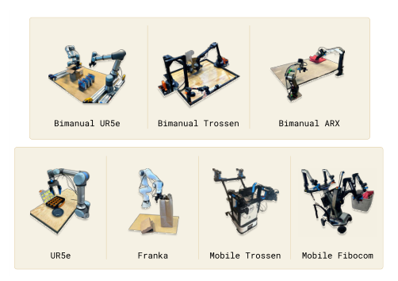
UR5e：配平行夹爪的单机械臂，使用腕部相机与肩部上方相机，共两路图像；构型与动作空间均为 7 维。
双臂 UR5e：两套 UR5e，共三路图像；构型与动作空间均为 14 维。
Franka：两台相机；构型与动作空间均为 8 维。
双臂 Trossen：基于 ALOHA [4,57] 的配置，使用两条六自由度 Trossen ViperX 机械臂、两台腕部相机和一台基座相机；构型与动作空间均为 14 维。
双臂 ARX 与双臂 AgileX：使用两条六自由度机械臂，支持 ARX 或 AgileX；两台腕部相机加一台基座相机，共三台；构型与动作空间均为 14 维。虽然是两个不同平台，但因运动学性质相似而归为一类。
移动 Trossen 与移动 ARX：基于 Mobile ALOHA [57]，在移动底盘上安装两条六自由度 ARX 或 Trossen ViperX 机械臂。非完整约束底盘增加两个动作维度，因此构型空间为 14 维、动作空间为 16 维；配两台腕部相机和一台基座相机。同样因运动学相近将两个平台合并分类。
移动 Fibocom：全向底盘上安装两条六自由度 ARX 机械臂；底盘增加平移两维、朝向一维，共三个动作维度，形成 14 维构型空间与 17 维动作空间。各机器人数据占比见图 4。
VI. 实验评估
实验评估包括开箱即用测试，将基础（预训练）模型通过直接提示运行的表现与……【下文续接】
原论文第 7 页 · 基础模型评估
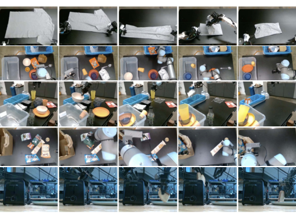
【承接前文】其他模型设计比较；同时开展详细微调实验，在具有挑战性的下游任务上将模型与既有灵巧操作方法比较。我们研究以下问题：
π0 在预训练后，能多好地完成预训练数据中包含的多种任务？我们直接评估 π0，并与其他机器人基础模型比较。
π0 能多好地遵循语言命令？我们将其与 π0-small 比较；后者是没有 VLM 初始化的小型版本。评估既使用人类提供的指令，也使用第 V-B 节的高层 VLM 策略给出的指令。
π0 与专为灵巧操作提出的方法相比如何？针对下游任务，我们既可以从预训练初始化微调，也可以仅使用任务专用数据从头训练，并与既有灵巧操作方法比较，以分别评估架构与预训练流程的收益。
π0 能否适配复杂多阶段任务？最后一组实验针对叠衣和清桌等特别复杂的任务微调。任务持续 5～20 分钟，部分需要高层策略引导。
A. 基础模型评估
第一组实验在全部混合数据预训练结束后直接评估，不进行后训练，以考察基础模型完成多种任务的能力。比较对象包括文献中的其他机器人基础模型：既有 VLA，也有在相同预训练混合数据上从头训练的小模型。图 6 展示以下任务，均通过语言命令交给同一个基础模型。
折叠衬衫：把一件开始时已铺平的 T 恤折好。
简单清桌：清理桌面，把垃圾放进垃圾桶、餐具放进餐具箱；得分反映正确放入相应容器的物体数量。
困难清桌：物体更多、布局更复杂，例如餐具故意放在垃圾上方、物体相互遮挡，以及出现预训练数据中没有的物体。
杂货装袋：把薯片、棉花糖、猫粮等全部杂货装进袋子。
取出吐司：从烤面包机中取出吐司。
为这些实验提供比较很有挑战性，因为很少有既有模型能在这一规模运行。我们比较了 OpenVLA [24]，一个最初在 OXE [10] 上训练的 70 亿参数 VLA，并将其在完整混合数据上训练。这对不支持动作分块或高频控制的原版 OpenVLA 很困难。还比较了 Octo [50]，一个 9300 万参数的小模型；它虽不是 VLA，却使用扩散过程生成动作，是流匹配 VLA 的有价值对照。Octo 也在相同混合数据上训练。由于时间限制，OpenVLA 和 Octo 无法训练到与完整模型相同的 epoch 数，因此我们另外比较“计算量对齐”的 π0：仅训练 16 万步，而主要模型训练 70 万步；对照方法分别为 OpenVLA 16 万步、Octo 32 万步。我们还提供仅在 UR5e 数据上微调、没有跨本体训练的 OpenVLA，以期在 UR5e 任务上得到更强基线。最后比较第 IV 节的 π0-small，可视为没有 VLM 预训练的缩小版本。
评估指标是每种方法、每项任务运行 10 回合后的平均归一化得分：完全成功为 1.0，部分成功给予相应分数。例如清桌得分为放入正确容器的物体比例。评分细则见附录 E。图 7 显示，π0 在全部开箱即用任务中取得明显最优结果；折衬衫与简单清桌任务接近完全成功，且显著优于所有基线。仅训练 16 万步的对齐版本仍超过全部基线，甚至 π0-small 也优于 OpenVLA 与 Octo。OpenVLA 在这些任务上困难较大，因为其自回归离散化架构不支持动作块。仅用 UR5e 数据的 OpenVLA 表现有所改善，但仍远……【下文续接】
原论文第 8 页 · 语言遵循实验
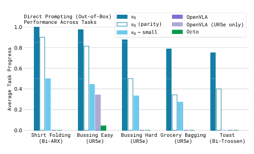
【承接前文】低于 π0。Octo 虽支持动作块，但表示能力相对有限。这说明，需要将大型、表达力强的架构与流匹配或扩散所提供的复杂分布建模能力结合起来。与 π0-small 的比较也体现了引入 VLM 预训练的重要性。不过，这个比较很难完全公平：π0-small 参数更少，而没有预训练的大模型又难以使用。总体来看，这些实验表明，π0 提供了一个强大的预训练模型，能通过多种机器人有效完成多种任务，表现明显优于此前模型。
B. 遵循语言命令
下一组实验微调基础 π0，使其在若干评估领域遵循语言命令，并与上一节最强基线 π0-small 比较。后者没有 VLM 初始化，因此本实验旨在衡量 VLM 预训练对语言指令遵循能力的提升。需要注意，π0-small 也显著更小，这一混杂因素难以消除：VLM 初始化既让更大模型能够在不过拟合的情况下训练，也能改善语言理解。尽管如此，我们希望实验能揭示 π0 的语言能力。每项任务的语言指令包含待抓物体与目标放置位置，语言标注片段长度约 2 秒。每个完整……【下文续接】
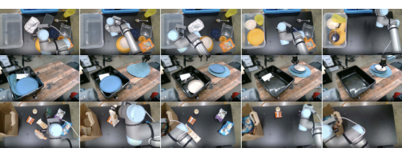
【承接前文】任务包含许多这样的片段。具体任务为：
清桌：将餐具、刀叉放入箱子，将垃圾放入垃圾桶。
摆桌：从箱子取出餐垫、餐具、刀叉、餐巾和杯子来布置餐桌，并按语言指令调整。
杂货装袋：将咖啡豆、大麦、棉花糖、海苔、杏仁、意大利面及罐头等装入袋子。
图 8 展示语言条件任务及评估结果。共评估五种设置。π0-flat 与 π0-small-flat 只接收总体任务描述，例如“把杂货装袋”，不提供中间指令。π0-human 与 π0-small-human 由专家用户提供中间步骤指令，例如抓哪个物体、放到哪里。这些设置考察模型遵循细致语言命令的能力：中间指令虽然提供了大量任务信息，但模型必须能理解并遵循，才能受益。最后，π0-HL 使用第 V-B 节高层 VLM 提供的命令；这一设置也是自主的，不依赖人类专家。
图 9 的结果对每项任务 10 次试验取平均，显示 π0 的语言遵循准确率显著高于 π0-small，表明较大的预训练 VLM 初始化带来了明显改善。这进一步转化为专家人类引导（π0-human）和高层模型引导（π0-HL）下的性能提升。结果说明，π0 的语言遵循能力能够直接转化为高层引导下复杂任务的自主执行能力。
C. 学习新的灵巧任务
原论文第 9 页 · 新任务微调实验
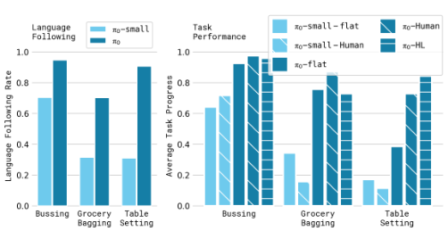
【本页原文从上文片段继续，意为任务要求全新的行为。】针对这些评估，我们分别用不同数据量微调每个新任务。虽然任务都是新的，但按与预训练任务差异的大小分为不同等级，见图 10。
UR5e 叠碗：将四个不同大小的碗堆叠。因抓取和移动餐具类似预训练中的清桌，将其归为“容易”。训练使用多种碗，测试同时包含见过和未见过的碗。
折毛巾：因为类似预训练中的折衬衫，也归为“容易”。
将保鲜盒放入微波炉：打开微波炉、放入塑料容器、再关门。容器形状和颜色不同，测试包含见过及未见过的容器。容器操作类似预训练，但微波炉没有出现在预训练中。
更换厨房纸卷：从支架取下旧纸筒，装上新纸卷。预训练中没有此类物体，因此归为“困难”。
Franka 将物品放入抽屉：打开抽屉、放入物品、关抽屉。预训练中没有 Franka 的类似任务，因此归为“困难”。
我们把微调后的模型与同样采用预训练／微调方案的 OpenVLA [24]、Octo [50] 比较。目标是评估具体模型，而非仅比较架构，所以使用它们在 OXE [10] 上训练的公开检查点，再分别微调到目标任务。还比较了 ACT [57] 与 Diffusion Policy [9]，它们专门面向用较小数据集学习灵巧任务；两者只在微调数据集上训练，这些数据规模与其原实验中的单任务数据集相近 [9,57]。对 π0，既评估从预训练基础模型微调，也评估从头训练，以区分架构与预训练流程的收益。我们假设，具有 VLM 初始化的 π0 架构已能提供更强起点，而机器人预训练会进一步改善表现，尤其在微调数据较少时。
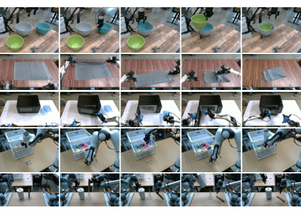
图 11 展示不同方法在各任务、不同微调数据量下的表现，每项任务平均 10 次测试。在叠碗与保鲜盒进微波炉任务上纳入全部基线。由于 OpenVLA 与 Octo 表现明显较差，且真实世界评估许多模型耗时较大，因此它们只在一种数据规模下运行。结果显示，π0 通常优于其他方法。有趣的是，最强的既有方法反而是完全在目标任务上从头训练的方法，说明已有方法在这些领域利用预训练仍面临重大挑战。π0 在保鲜盒任务上使用 5 小时数据时与基线相近，但使用 1 小时数据时明显更优。符合预期的是，预训练对于那些与预训练数据更……【下文续接】
原论文第 10 页 · 复杂多阶段任务
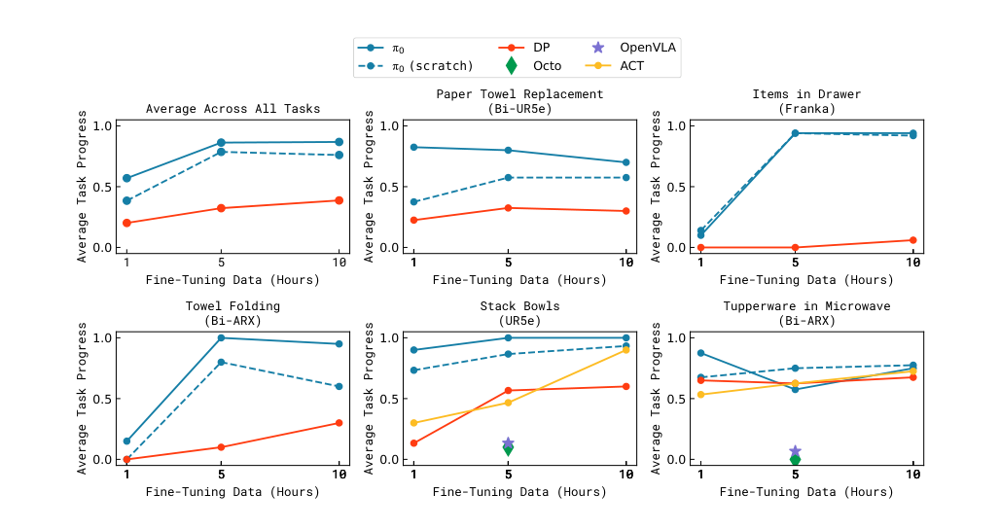
【承接前文】相似的任务带来更大改善。不过预训练模型经常也优于非预训练模型，有时达到后者的两倍。
D. 掌握复杂多阶段任务
最后一组实验结合微调与语言，处理一系列具有挑战性的多阶段任务。有些任务在预训练中有数据，但要达到熟练水平仍需微调；另一些则完全没有出现在预训练中。图 12 展示这些任务。
叠衣：固定式双臂机器人将衣物从篮中取出、折叠，并叠放到已折好的衣物上。衣物初始时随机揉皱，模型必须泛化到任意构型，这是主要挑战。该任务存在于预训练中。
移动叠衣：图 5 的 Fibocom 移动机器人折叠衣物，同时控制朝向和移动，面临许多相同挑战。该任务存在于预训练中。
清空烘干机：Fibocom 从烘干机取出衣物并放入篮子。该任务存在于预训练中。
清桌：在拥挤场景中清理种类多样的新物体，比开箱即用测试中的基准困难得多；策略必须泛化到形状和大小各异的……【下文续接】
【承接前文】未见物体，并完成复杂灵巧动作，例如旋转夹爪来抓大盘子，或谨慎抓取玻璃杯等薄而脆弱的物品。机器人必须处理密集杂乱场景并合理安排动作顺序：例如清理装有垃圾的盘子时，先拿盘子、把内容物抖入垃圾桶，再把盘子放入箱子。这个任务不在预训练中。
组装纸盒：从平铺纸板开始组装盒子。需要正确弯折，一边按住某些部分、一边折其他部分，同时利用双臂甚至桌面提供支撑。有时需要重试折叠，因此要求具备反应性且合理的策略。该任务不在预训练中。
打包餐盒：把盘子上的数样食物放进外带餐盒，摆放时不能突出盒外，最后用双臂关盒。该任务不在预训练中。
鸡蛋装盒：从碗中取出六个鸡蛋，放入蛋盒并关盖。必须根据鸡蛋在碗中的姿态适当抓取，再放入空槽；蛋的形状、易滑性及精确放置需求带来挑战，关盒需使用双臂。该任务不在预训练中。
原论文第 11 页 · 实验结果与讨论
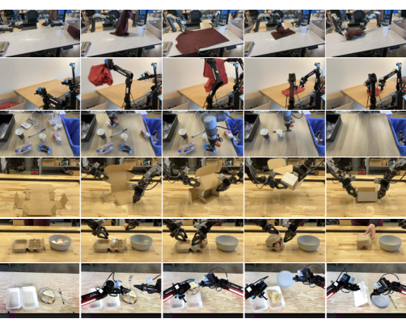
【原文续段】结果见图 13，评分细则见附录 E。1.0 分表示完美执行，部分得分对应任务部分完成，例如 0.5 表示一半物品被正确清理。这些任务很困难，我们未能用其他方法解决，因此用它们比较本方法的消融版本：预训练再微调的 π0、仅预训练后的开箱即用版本，以及不做预训练、只在微调数据上训练的“scratch”版本。结果表明 π0 能解决其中许多任务，完整的预训练加微调方案整体最佳。许多困难任务从预训练中获得特别大的提升，说明预训练在更难任务上尤其有用。π0 的绝对表现因任务而异，可能由任务难度及其在预训练中被覆盖的程度造成。建议读者观看配套网站的视频，以更完整理解任务及其复杂性。我们认为，在这些挑战任务上达到这样的自主表现，代表了学习型灵巧机器人操作的新水平。
VII. 讨论、局限性与未来工作
我们提出了名为 π0 的机器人基础模型训练框架：先在高度多样化数据上预训练，随后直接评估，或针对复杂下游任务微调。
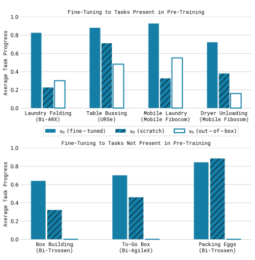
实证评估研究了结合灵巧性、泛化以及长时多阶段行为的任务。模型将互联网规模的 VLM 预训练与流匹配结合，表示复杂的高频动作块。预训练混合数据包括来自 7 种机器人配置、68 项任务的 10,000 小时灵巧操作数据，以及 OXE [10]、DROID [23] 和 Bridge [52] 等先前采集的大量机器人操作数据。据我们所知，这是机器人操作模型使用过的最大预训练混合数据。微调实验涉及超过 20 项任务，模型优于多种基线，包括此前的 VLA [24] 以及专为灵巧操作设计的模型 [57,9]。我们也研究后训练方案怎样支持从任意初始构型连续叠多件衣物或组装纸盒等高度复杂任务。
这个框架总体类似大语言模型的训练过程：先在互联网收集的超大数据集上预训练基础模型，再通过后训练“对齐”，使其遵循指令并执行用户命令。通常认为，大多数“知识”在预训练阶段获得，而后训练告诉模型怎样运用知识满足用户要求。我们的实验表明，机器人基础模型可能也有类似……【下文续接】
原论文第 12 页 · 局限性、致谢及参考文献
【承接前文】现象：预训练模型具有一定零样本能力，但叠衣等复杂任务需要高质量数据微调。只在高质量数据上训练，会得到无法可靠从错误中恢复的脆弱模型；只做预训练后零样本执行，又未必展现后训练数据中流畅的策略。
我们希望这些结果成为迈向通用、广泛适用机器人基础模型的踏脚石。实验表明这类模型或许很快能成为现实，但仍有局限和大量未来工作。首先，实验尚未全面解释预训练数据应如何组成：我们组合了所有可获得的数据，但哪类新增数据更有帮助、该怎样赋权，仍是开放问题。并非所有评估任务都能可靠完成；如何预测达到近乎完美表现所需的数据数量与类型，仍不清楚。最后，组合高度多样的数据，尤其来自不同任务、不同机器人时，到底能产生多少正迁移，还待研究。虽然结果暗示统一的预训练机器人基础模型可能实现，但这种通用性是否延伸到自动驾驶、导航和足式运动等差异更大的领域，仍有待未来工作回答。
致谢
感谢 Laura Smith 和 Dibya Ghosh 对论文的反馈及对图表、视频的帮助；感谢 Philip Clark、Kelly Sims、Saunaz Moradi 对写作的反馈；感谢 Evan Pokrandt、Joakim Keussen、Dan Philibin、Eitan Penner、Adam Lisagor、Greg Miller 对插图、设计和视频的帮助。感谢 Lili Yu 的技术讨论。尤其感谢所有不辞辛劳采集机器人操作数据的操作人员。完整贡献声明见附录 A。
参考文献。以下书目信息及第 13～15 页相应条目保留英文，便于按作者、标题、编号检索；可在本页原始页面或原 PDF 中查看。
原论文第 15 页 · 参考文献末尾与附录 A、B
附录
A. 作者贡献
作者在以下领域作出贡献，姓名按字母顺序列出：
数据与运营：Noah Brown、Michael Equi、Chelsea Finn、Niccolo Fusai、Lachy Groom、Liyiming Ke、Suraj Nair、Lucy Shi、Anna Walling。
评估实验：Kevin Black、Michael Equi、Chelsea Finn、Brian Ichter、Liyiming Ke、Adrian Li-Bell、Suraj Nair、Karl Pertsch、Lucy Shi。
模型设计：Kevin Black、Brian Ichter、Sergey Levine、Karl Pertsch、Lucy Shi、Quan Vuong。
后训练：Michael Equi、Chelsea Finn、Liyiming Ke、Adrian Li-Bell、Suraj Nair、Lucy Shi。
预训练：Kevin Black、Danny Driess、Brian Ichter、Sergey Levine、Karl Pertsch、Lucy Shi、Quan Vuong。
机器人硬件：Noah Brown、Adnan Esmail、Chelsea Finn、Tim Jones、Mohith Mothukuri。
机器人软件：Karol Hausman、Szymon Jakubczak、Sergey Levine、James Tanner、Haohuan Wang。
训练基础设施：Kevin Black、Michael Equi、Sergey Levine、Adrian Li-Bell、Suraj Nair、Quan Vuong、Haohuan Wang、Ury Zhilinsky。
写作与插图：Kevin Black、Chelsea Finn、Lachy Groom、Karol Hausman、Brian Ichter、Sergey Levine、Quan Vuong。
B. 模型架构细节
本节完整描述模型架构。我们遵循 PaliGemma VLM [5] 的设计，区别如下：（1）为机器人专用 token 增加输入与输出投影，处理状态向量 qₜ 和动作向量 Aₜ=[aₜ,…,aₜ₊H₋₁]；（2）增加一个 MLP，纳入流匹配时间 τ；（3）为动作专家增加第二套更小的权重。
额外输入与输出。标准 PaliGemma 以图像序列 [Iₜ¹,…,Iₜⁿ] 及其后的语言提示 ℓₜ 为输入。我们增加机器人本体感知状态 qₜ，通过线性投影映射至 Transformer 嵌入维度。最后一组输入 token 对应带噪动作块 Aₜ^τ=[aₜ^τ,…,aₜ₊H₋₁^τ]，token 数等于动作预测长度 H，本文任务取 H=50。只使用对应 H 个带噪动作的 Transformer 输出，并通过线性投影解码为 vθ(Aₜ^τ,oₜ)。
纳入流匹配时间步。带噪动作块……
【承接前文】Aₜ^τ 经一个同时纳入流匹配时间 τ 的 MLP 映射至 Transformer 嵌入维度。对于每个带噪动作 aₜ′^τ，其输入 Transformer 的嵌入为：W₃·swish(W₂·concat(W₁·aₜ′^τ, φ(τ)))。其中 φ:ℝ→ℝʷ 是正弦位置编码函数 [51]；W₁∈ℝʷˣᵈ，W₂∈ℝʷˣ²ʷ，W₃∈ℝʷˣʷ；d 为动作维数，w 为动作专家的嵌入维数（宽度）。
注意力掩码。π0 使用分块因果注意力掩码，包含三个块：[图像序列, ℓₜ]、[qₜ]、[带噪动作序列]。每个块内部完全双向注意，但不能关注后续块中的 token。第一块包含 PaliGemma 在 VLM 预训练时就使用的模态；禁止它关注包含新输入的后续块，是为了尽量减少相对于预训练的分布偏移。机器人状态 qₜ 独立成块，因为它不会随每次流匹配积分改变；禁止其关注最后一个块，就能在采样期间缓存它的键和值。最后一个块对应带噪动作……【下文续接】
【承接前文】Aₜ^τ，可关注整个输入序列。
动作专家。π0 实现为具有两套权重（也称专家 [45]）的单个 Transformer，每个 token 被路由到其中一套；两套权重只通过 Transformer 的自注意力层交互。图像与语言提示被路由至从 PaliGemma 初始化的较大 VLM 骨干；VLM 预训练未见的输入 [qₜ,Aₜ^τ] 被路由至动作专家。PaliGemma 基于 Gemma 2B [49]，采用多查询注意力 [44]，文中给出的配置为 width=2048、depth=18、mlp_dim=16,384、num_heads=18、num_kv_heads=1、head_dim=256。由于专家只在自注意力层交互，它们的 width 和 mlp_dim 不必相同。为加速需要多次前向的动作专家推理，将其缩小为 width=1024、mlp_dim=4096，参数量约 3 亿。
译者注：上述配置数值按用户提供的论文保留；实际复现请同时核对代码中的模型配置。
流匹配时间步采样。原始流匹配论文 [28,32] 从……【下文续接】
原论文第 16 页 · 附录 B～E：架构与推理
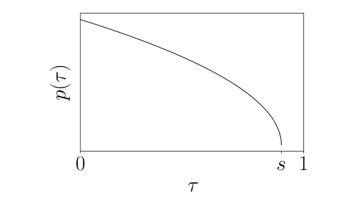
【承接前文】均匀分布 τ∼U(0,1) 中采样。Esser 等 [14] 则提出从强调中间时间步的 logit-normal 分布采样，认为高时间步（低噪声）只需学恒等函数，而低时间步（高噪声）只需学数据分布均值。不过，我们认为动作预测与高分辨率图像生成存在细微差别：给定文本标签预测平均图像可能较容易，但给定机器人观察预测平均动作，即学习 E[Aₜ|oₜ]，要困难得多，因为观察 oₜ 包含的信息丰富，对可能动作分布的约束应远强于文本标签对图像分布的约束。因此我们设计了强调低时间步、高噪声水平的采样分布。此外，完全不采样高于阈值 s 的时间步；只要积分步长 δ 大于 1−s，就不需要这些时间步。分布在原文中写为 p(τ)=Beta((s−τ)/s;1.5,1)，见图 14。实验取 s=0.999，可使用大于 1/1000 的 δ，文中描述为最多约 1000 个积分步骤。
C. 非 VLM 基线架构
π0-small 不以 VLM 为骨干，因此用它评估 VLM 预训练的收益。我们让它具有足够表达力以拟合大数据集，同时从头训练时仍有较好表现。其参数量约 4.7 亿，与主模型的区别是：（1）因为没有语言模型骨干，使用 DistilBERT [42] 编码语言命令 ℓₜ；（2）动作专家通过交叉注意力读取观察编码器输出，类似传统编码器—解码器 Transformer [51]，主模型则更像仅解码器的混合专家模型 [45]；（3）图像使用较小的预训练 ViT 编码器，具体是 Steiner 等 [47] 的 R26-S-32 ResNet-ViT 混合架构；（4）不同 ViT 图像编码器不共享权重；（5）图像编码器之后、负责编码观察的 Transformer 骨干未在互联网数据上预训练；（6）动作专家采用 DiT [36] 而非 Gemma，并通过 AdaLN-Zero 层纳入流匹配时间 τ。除此之外两者总体相似：都使用预训练 ViT 图像编码器，观察编码器与动作专家使用独立权重，输入观察格式相同，并执行 10 步流匹配来预测动作块。
D. 推理
回顾一下：模型接收观察 oₜ=[图像序列, ℓₜ, qₜ] 和带噪动作 Aₜ^τ，输出下一步流匹配积分所需的向量场 vₜ^τ。每次预测新动作块 Aₜ，先编码所有图像，再对 oₜ 对应的 token 做一次前向，随后执行 10 步流匹配；每步对 Aₜ^τ 对应的 token 做前向，而 oₜ 的键和值会缓存。表 I 汇总使用三路相机图像时的计算耗时，测试设备为消费级 NVIDIA GeForce RTX 4090。对于移动机器人，推理运行在机器人之外，经 Wi-Fi 通信，因此增加少量网络延迟。进一步优化、量化等方法可能继续降低推理耗时。
因为模型一次生成完整的 H 步动作块，理论上最多可执行 H 条动作再进行下一次推理。但也可以更频繁推理，并采用各种聚合策略组合不同推理调用的动作。我们早期尝试了时间集成 [57]，发现损害策略表现，因此最终不聚合动作，而是以开环方式执行动作块。对于运行频率 20 Hz 的 UR5e 与 Franka，每执行 16 条动作、即每 0.8 秒推理一次；其他机器人运行在 50 Hz，每执行 25 条动作、即每 0.5 秒推理一次。
表 I：模型在 NVIDIA GeForce RTX 4090 上的推理耗时。
图像编码器：14 ms。
观察前向：32 ms。
10 次动作前向（流匹配）：合计 27 ms。
网络延迟（若使用机外推理）：13 ms。
机载推理总计：73 ms。
机外推理总计：86 ms。
E. 评估细节
我们为每项任务设计衡量完成进度的评分规则，并以此得到定量结果。
原论文第 17 页 · 附录 E：评分细则
下面分别描述各项评分规则。
A. 基础模型评估
折叠衬衫：记为成功或失败。开始时将衣服铺平；成功要求将袖子折入，并沿衣身长度方向对折一次。评估使用 4 件小号 T 恤和 1 件中号 T 恤，每件测试 2 次，每次最多 15,000 步，约 5 分钟。
简单清桌：满分 7 分，桌上 7 个不同物体，每正确分类一个得 1 分。
困难清桌：满分 12 分，桌上 12 个不同物体，每正确分类一个得 1 分。包含筷子放在垃圾上方等困难布局。
杂货装袋：满分 7 分，7 件杂货每装入一件得 1 分。
取出吐司：满分 4 分，每片吐司从烤面包机取出得 1 分，放到盘子上再得 1 分。
B. 语言指令遵循
从成功重新放置物体和是否遵循指令两方面评分。
清桌：按指令抓取正确物体并放到正确容器，每回合共 12 个物体、约 30 条指令。
摆桌：摆放全部餐具和餐巾，并按语言要求调整；每回合共 7 个物体、约 20 条指令。
杂货装袋：从咖啡豆、大麦、棉花糖、猫粮、意大利面、海苔、杏仁中选择正确物品并装进纸袋；每回合 7 个物体、约 14 条指令。
C. 学习新的灵巧任务
叠碗：满分 3 分，两只碗分别叠入更大碗中各得 1 分，最终整齐度得 1 分。
折毛巾：满分 3 分，第一次对折、第二次对折、最终整齐度各 1 分。
保鲜盒进微波炉：满分 4 分，开门、抓取保鲜盒、放进微波炉、关门各 1 分。
更换纸卷：满分 4 分，抓旧纸卷、取下旧纸卷、抓新纸卷、将新纸卷装到支架各 1 分。
物品入抽屉：满分 5 分，开抽屉 1 分，三件物品每抓起并……【下文续接】
【承接前文】放进抽屉各 1 分，关抽屉 1 分。
D. 掌握复杂多阶段任务
叠衣：满分 4 分。评估使用 5 件衣物：M、L、XL 三件上衣，以及 28、36 码两条短裤。每件测试 2 次。待评估衣物随机揉皱放在篮子里，已评估衣物预先叠放。取衣放到桌上 1 分、铺平 1 分、折叠 1 分；最后放到桌角（若是第一件）或叠到已折衣堆上 1 分。每次最多 15,000 步，约 5 分钟。
移动叠衣：遵循相同流程，三件上衣尺码为 M、M、XL，短裤为 32 和 31 W。
清桌：满分 12 分，12 个不同物体，每正确分类一个 1 分，包含筷子压在垃圾上等困难情况。
组装纸盒：满分 5 分，成功拿起纸盒开始任务、将盒体折成能合上翼片的形态、关右翼片、关左翼片、最后整齐居中摆放，各 1 分。
鸡蛋装盒：满分 7 分，每颗鸡蛋正确放入槽位得 1 分，关盖得 1 分。
食物打包：满分 5 分，拿起装食物的盘子 1 分，三样食物每放入餐盒一种得 1 分，关餐盒 1 分。
清空烘干机：机器人带着洗衣篮靠近烘干机并将衣物取入篮子。满分 5 分：正确靠近、把篮子放到凳子上、开烘干机、把全部衣物放进篮子、关烘干机，各 1 分。使用随机放在烘干机内的 3 件上衣和 2 条短裤评估。